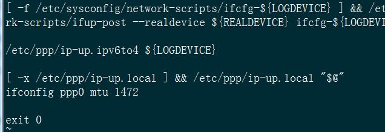

# 概述
本文通过在阿里云轻量级应用服务器部署 pptpd 服务器来达到通过该服务器 ip 访问外网的目的
# 准备工作
首先得先购买一台阿里云轻量级应用服务器，进入阿里云
- 点击产品，选择弹性计算 -> 轻量级应用服务
- 立即购买
- 根据自己的需求选择购买，我选择了新加坡，centos7.3, 1 个月的服务器，一个月费用才 24，其实很划算。需要注意的是 linux 系统不能重装为 windows 系统，请谨慎选择
- 付款后进入控制台后看见购买了的服务器
- 点击服务器，点击安全 -> 防火墙，开放 1723 端口，vpn 通过该端口来进行通信
# 安装 pptpd
# 配置 pptpd 文件
- 查看系统是否支持
modprobe ppp-compress-18 && echo yes
- 安装服务
yum -y update
yum install -y ppp pptpd - 执行下面命令，编辑配置文件，删除下列两行命令符前面的 “#”，保存后退出，<b>localip 后面的是外网地址 </b>如下
vi /etc/pptpd.conf# be set to the given one. You MUST still give at least one remote # IP for each simultaneous client. # # (Recommended) localip 149.129.57.100 remoteip 192.168.0.234-238 # or - 执行下面命令，将 ms-dns 修改为 223.5.5.5 和 223.6.6.6。保存后退出
vi /etc/ppp/options.pptpdIP 地址 223.5.5.5 和 223.6.6.6 是阿里云的公共 DNS 服务器地址，您可以根据需要调整为其它公共 DNS 服务地址
- 执行下面命令，设置 pptpd 的用户名和密码。根据需要添加账号，一行只添加一个用户账号。按照 “用户名 pptpd 密码 IP 地址” 格式输入，每一项用空格隔开。保存后退出。如下
vi /etc/ppp/chap-secrets# Secrets for authentication using CHAP# client server secret IP addressestest pptpd 123456 *
- 执行下面命令，设置最大传输单元 MTU。在命令符 [-x /etc/ppp/ip-up.local] && /etc/ppp/ip-up.local “$@” 下方添加 ifconfig ppp0 mtu 1472如下
vi /etc/ppp/ip-up/etc/ppp/ip-up. ipv6to4 ${LOGDEVICE}[ -x /etc/ppp/ip-up.local ] && /etc/ppp/ip-up.local “$@”
ifconfig ppp0 mtu 1472
# 设置内核参数
- 执行
vi /etc/sysctl.conf - 编辑配置文件，最后一行添加 net.ipv4.ip_forward = 1，保存后退出。
net.ipv4.ip_forward = 1
- 执行 sysctl -p 命令，使修改后的参数生效
sysctl -p
# 防火墙配置
禁用防火墙
systemctl stop firewalld
systemctl disable firewalld
或者开启相关端口
firewall-cmd --zone=public --add-port=1723/tcp --permanent
firewall-cmd --reload
执行如下命令，添加 iptables 转发规则
iptables -t nat -A POSTROUTING -s 192.168.0.0/24 -j MASQUERADE注意这个转发规则，不通的架构，命令是不一样的
XEN 架构：iptables -t nat -A POSTROUTING -s 192.168.0.0/24 -o eth0 -j MASQUERADE
OpenVZ 架构：iptables -t nat -A POSTROUTING -s 192.168.0.0/24 -j SNAT --to-source VPS 公网 IP有个软件可以查看 vps 架构
yum install virt-what输入 virt-what 就会显示当前架构
virt-what
执行如下命令，添加 NAT 转发规则，其中 XXX.XXX.XXX.XXX 为您的实例公网 IP 地址
iptables -t nat -A POSTROUTING -s 192.168.0.0/255.255.255.0 -j SNAT --to-source XXX.XXX.XXX.XXX执行下面命令进行配置
iptables -P INPUT ACCEPT #改成 ACCEPT 标示接收一切请求iptables -F #清空默认所有规则iptables -X #清空自定义所有规则iptables -Z #计数器置 0iptables -A INPUT -i lo -j ACCEPT #允许 127.0.0.1 访问本地服务iptables -A INPUT -m state --state ESTABLISHED -j ACCEPT #允许访问外部服务iptables -A INPUT -p icmp -m icmp --icmp-type 8 -j ACCEPT #允许 ping
iptables -A INPUT -p tcp --dport 22 -j ACCEPT #开启 ssh 端口
iptables -t nat -A POSTROUTING -s 192.168.0.0/24 -o eth0 -jMASQUERADEiptables -A INPUT -p tcp --dport 1723 -j ACCEPT保存
service iptables save如果上述命令执行失败报出：
The service command supports only basic LSB actions (start, stop, restart, try-restart, reload, force-reload, status). For other actions, please try to use systemctl.
执行下面命令
- 关闭防火墙
systemctl stop firewalld
- 安装或更新服务
yum install iptables-services- 启动 iptables
systemctl enable iptables- 打开 iptables
systemctl start iptables
- 再次保存
service iptables save
# 配置 PPTP 服务
- 执行如下命令，重启 PPTP 服务。
systemctl restart pptpd |
- 执行如下命令，重启 iptables。
systemctl start iptables |
# 连接 VPN 服务器
- 打开 windows 设置，点击网络和 Internet
- 点击 vpn -> 添加 vpn 连接
- 按图片选择，保存并连接就可以了